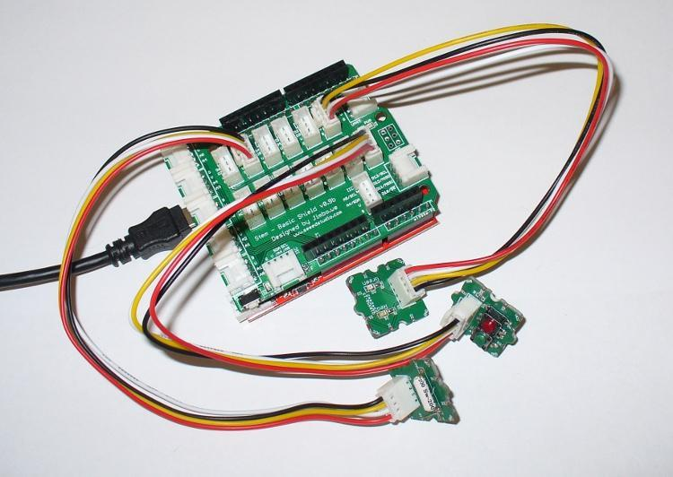

Project Two – Digital Input
The purpose of this project is to demonstrate two forms of digital input – using the button and the tilt switch . Pressing either of the buttons will light the respective LED, and activating the tilt-switch will light both LEDs.
- Connect the LED to the D1/D2 Digital I/O jack, like it was in Projects 1 and 2.
- Arduino Pin D1 powers the Red LED on the Grove's D1 connector, and Arduino Pin D2 powers the Green LED on the Grove's D2 connector.
- Connect the Tilt Switch to the D5/D6 Digital I/O jack.
- The Tilt Switch Grove's D1 connector sends a high or low signal to the Arduino's D5 digital input.
- Connect the Twin Button Grove to the D7/D8 input jack (on the second row.)
- The Twin Button Grove's red button uses the D1 connector to send a signal to the Arduino's D7 digital input, and the green button uses the D2 connector to send a signal to the Arduino's D8 digital input.

Now upload the following Arduino sketch:
// Project Two - Digital Inputs
//
void setup()
{
pinMode(1, OUTPUT);
pinMode(2, OUTPUT);
pinMode(5, INPUT);
pinMode(7, INPUT);
pinMode(8, INPUT);
}
void loop()
{
if (digitalRead(5)==HIGH)
{
digitalWrite(1, HIGH);
digitalWrite(2, HIGH);
delay(100);
digitalWrite(1, LOW);
digitalWrite(2, LOW);
}
if (digitalRead(7)==HIGH)
{
digitalWrite(1, HIGH);
delay(200);
digitalWrite(1, LOW);
}
if (digitalRead(8)==HIGH)
{
digitalWrite(2, HIGH);
delay(200);
digitalWrite(2, LOW);
}
}
Copyright (c) 2008-2016 Seeed Development Limited (
www.seeedstudio.com /
www.seeed.cc)
This static html page was created from http://www.seeedstudio.com/wiki